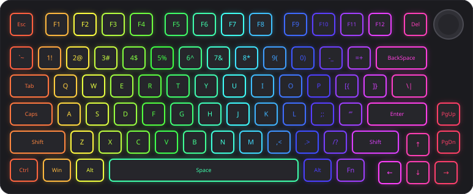
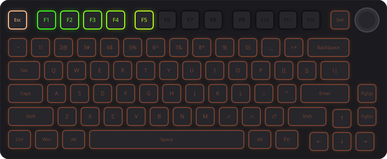
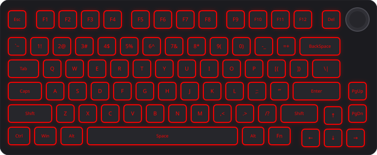
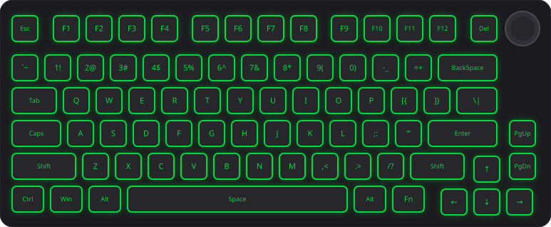
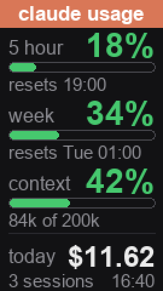
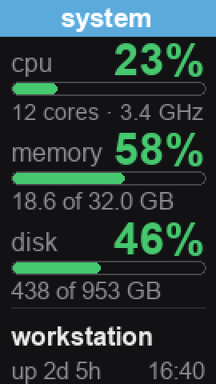
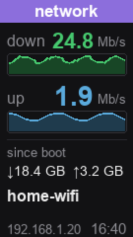

mokuru is an open-source companion app for the MOKURU AK8753. It puts live screens on the keyboard's LCD, lets you script its lighting, turns the dial into an app switcher, and makes the keys show what Claude Code is doing.







No extra hardware. mokuru speaks the keyboard's own USB protocol and runs quietly in the background on Windows, macOS and Linux.
Claude usage, CPU and memory, and network speed on the keyboard's 135×240 screen. Flip between them with Fn + dial press.
Every effect the keyboard has, in any colour and speed: mokuru light wave,
static --color 00ffcc, or pick one from the tray.
Hold Ctrl and turn the dial to step through your windows like Alt+Tab. Release to pick one. The dial alone is still volume.
Orange while Claude works, red when it needs your permission, green when it's done, with a context bar across F1–F12.
Lighting and Claude states work through the wireless dongle too, with a battery readout. It switches over by itself as you plug and unplug.
A tray icon starts at login, the clock stays synced, and your own lighting comes back whenever Claude is idle.
The LCD
The keyboard shows its clock and your pictures on its own. mokuru adds three screens that keep themselves up to date. Press Fn + dial to flip through them.
5-hour and weekly plan limits with reset times, context used, and dollars spent today across all sessions.
CPU load, memory and disk in use, your machine's name and uptime.
Download and upload speed with the last few minutes graphed, data since boot, Wi-Fi name and IP.
Bars go yellow at 70% and red at 90%. Each screen redraws only when its numbers move, at most every 5 minutes, which spares the keyboard's flash.
Claude Code integration
One command installs the Claude Code hooks. After that the board reacts on its own, and you can see it from across the room.
| Claude Code | Your keyboard |
|---|---|
| You submit a prompt | Claude orange, Esc bright, context bar on F1–F12 |
| Claude asks for permission | Fast red breathing until you answer |
| Claude finishes | Green for 4 seconds, then your own lighting |
| Nothing running | Whatever you set with mokuru light |
With several sessions open, the most urgent one wins: "needs you", then "working", then "done". The Claude usage screen reads Claude Code's status line, so its numbers match what Claude Code shows.
A small background service owns the keyboard, and everything else talks to it.
mokuru command, the tray menu and the Claude Code hooks all send it requests.Python 3.9+ on Windows, macOS or Linux. Plug the keyboard in by USB cable for the LCD.
$ pipx install "git+https://github.com/goriparthi/mokuru.git#egg=mokuru[tray]" $ mokuru info # finds the keyboard $ mokuru install autostart # tray icon at login $ mokuru install hooks # optional: Claude Code $ mokuru install statusline # optional: Claude usage screen
On Linux, mokuru install udev prints the rule that lets you open the keyboard without root.
Your lighting is what the board shows whenever Claude isn't using it.
$ mokuru light wave # rainbow $ mokuru light static --color 00ffcc $ mokuru image photo.jpg # your own picture $ mokuru lcd usage | off # live screens $ mokuru pause | resume # Claude lighting $ mokuru status # link, battery, state
3151:5002, dongle 3151:5006).
Other ROYUAN-based boards are similar but not the same.